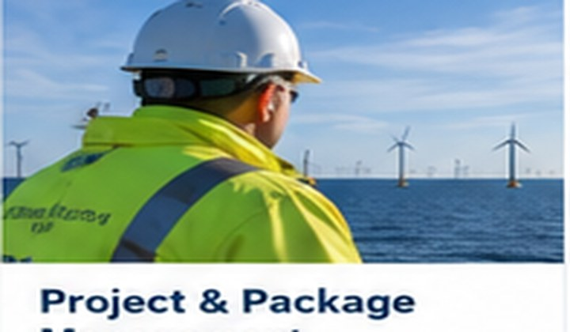
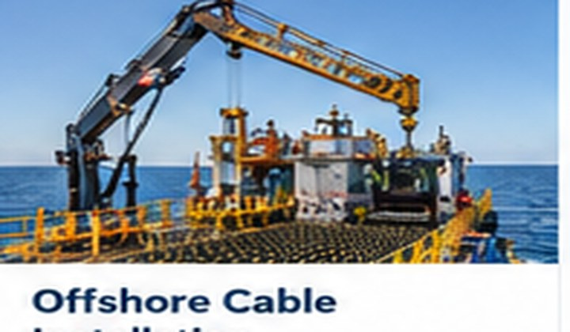
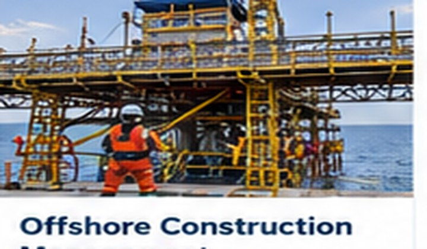
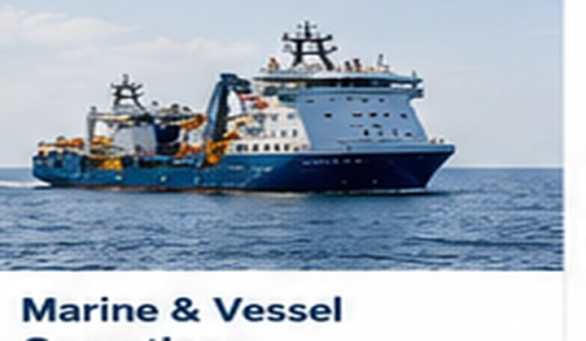
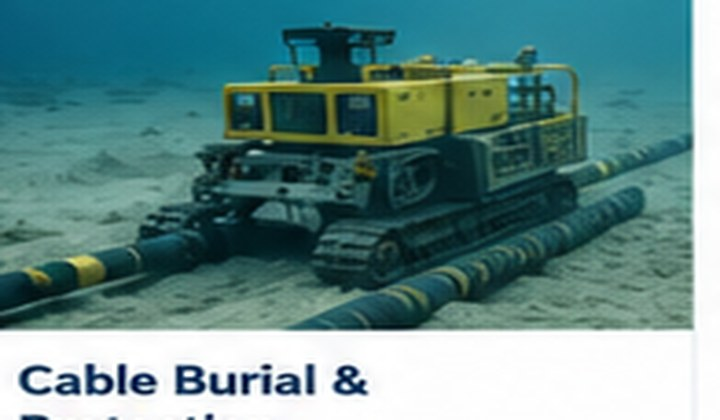
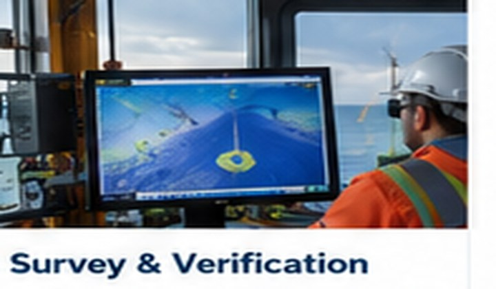

Project & Package Management
Scope, programme, risk, contractor and stakeholder coordination.
→SPECIALIST EXPERTISE
Ecotegrity provides specialist project management, offshore construction and cable installation expertise to the offshore wind and subsea industries.
OUR EXPERTISE →OUR EXPERTISE
Practical, experience-led support for complex offshore projects, connecting engineering requirements with safe and effective offshore execution.

Scope, programme, risk, contractor and stakeholder coordination.
→
Export and inter-array cable installation support from readiness through completion.
→
Execution leadership, offshore representation, progress and quality oversight.
→
Campaign readiness, vessel coordination and offshore interface management.
→
Route preparation, trenching, jetting, ploughing, CPS and burial assessment.
→
Survey coordination, testing, burial verification and completion assurance.
→SELECTED PROJECT EXPERIENCE
Selected project names from experience gained across offshore wind, power and subsea telecommunications.
ABOUT ECOTEGRITY
Ecotegrity is an independent consultancy supporting offshore wind and subsea cable projects with project, package, installation and offshore construction management expertise.
We support the project lifecycle from planning and readiness through marine construction, installation, protection, verification and completion.
PROJECT DELIVERY
Maintaining continuity between engineering intent and offshore execution.
EXPERIENCE TODAY.